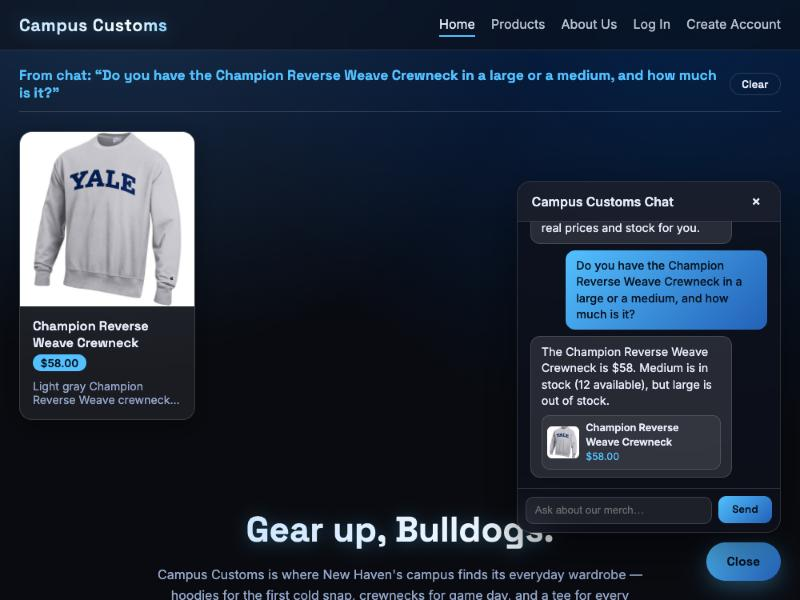
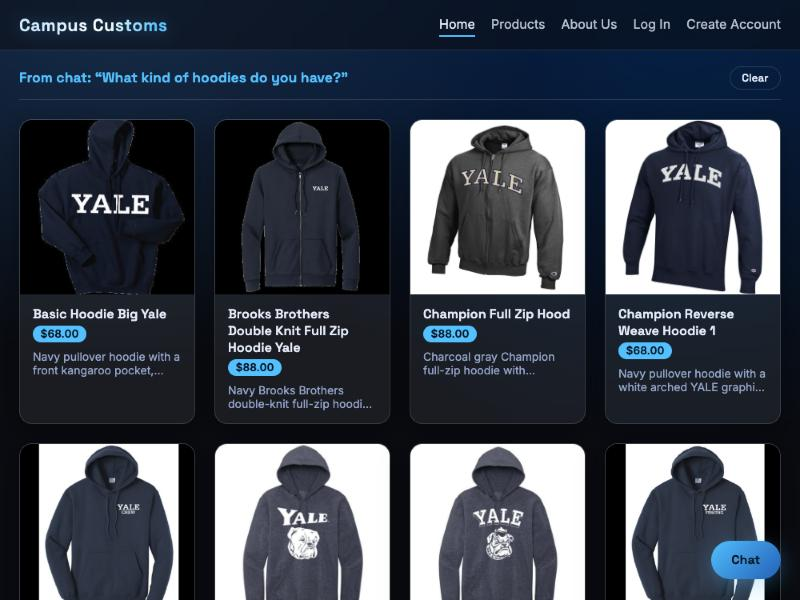
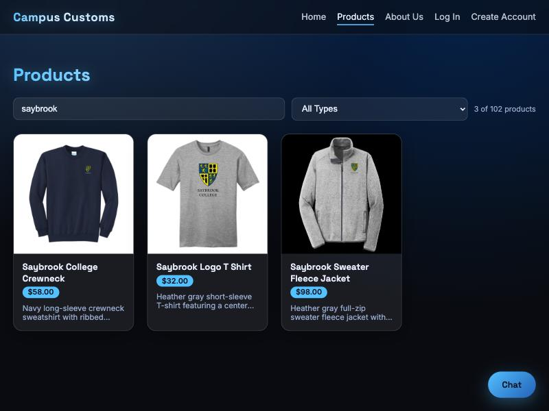

Problem 11: live tests of the running app (backend + frontend + agent, both started locally). Each section below is one check: a heading, a screenshot of the actual running site, and one or two sentences on what the screenshot proves.

Asked the chat "Do you have the Champion Reverse Weave Crewneck in a large or a medium, and
how much is it?" The assistant replied with the exact catalogue price ($58) and correctly
said Medium is in stock (12 available) while Large is out of stock — both numbers match
campus_customs.db exactly (inventory: L=0, M=12), proving the agent
is reading real data rather than guessing.

Asked the chat "What kind of hoodies do you have?" while sitting on the Home page. The page itself — not just the chat bubble — immediately rendered a "From chat" panel with real hoodie product cards (image, name, price, short description), fulfilling the Problem 7 contract: the agent returns matching product IDs, and the front end renders them live on whatever page the shopper is on.

Typed "saybrook" into the Products page search box. The grid instantly filtered from 102 items down to the 3 real Saybrook-branded products, with a live "3 of 102 products" count — the search/filter bar added in Problem 9 to make a 100+ item catalogue easy to narrow down without scrolling.